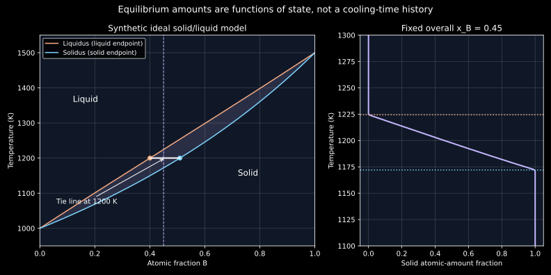

3. Reading unary and binary equilibrium diagrams
A point marked “liquid + solid” does not mean that both phases have the composition written directly beneath the point. That coordinate belongs to the whole specimen. At the same temperature the liquid and solid usually occupy different compositions, read from the ends of a tie line. Their amounts adjust so that their weighted average recovers the specimen composition. This chapter turns that geometric instruction into a sequence of conserved-quantity checks, then shows exactly where a two-phase lever rule stops being sufficient.
The complete local transcripts of substantive lessons 3–5 supply the progression: state variables and unary maps; binary axes, liquidus and solidus; phase compositions and lever balances; miscibility gaps; gradual solidification and eutectic reactions; terminal solutions and phase names. All three were read sequentially. The computed ideal-solution diagram and the rational eutectic example are original, explicitly synthetic constructions. They are not digitized Cu–Ni or Al–Si data. Machine recognition and uninspected board details remain possible sources of uncertainty.
3.1 A phase diagram maps specified conditions to equilibria L3 · 01:01
An equilibrium phase diagram records which phases can minimize the appropriate thermodynamic potential under specified conditions and constraints. Temperature, pressure and composition are common coordinates. The diagram is a statement about equilibrium; it is not a trajectory through time, a complete picture of the microstructure, or a claim that every specimen reaches its minimum energy quickly.
The lecture first compares nickel and iron at the same temperature, then changes the temperature of each. The point is that changing the chemical system can change the stable structure, and changing temperature within one chemical system can do the same. A crystal prototype alone cannot choose stability. Its thermodynamic competition with other admissible phases matters.
A diagram must also state what it holds fixed. A usual binary temperature–composition diagram is a section at a specified pressure. Omitting pressure from the plotted axes does not make its physical effect zero. Other relevant conditions can include an imposed magnetic field, hydrostatic versus nonhydrostatic stress, or whether a calculation permits metastable phases. Unless stated otherwise here, consider macroscopic bulk phases at fixed hydrostatic pressure, with interface contributions neglected and no external fields.
An intensive variable is unchanged when the amount of an otherwise identical homogeneous specimen is scaled. An extensive variable scales with that amount. Coordinates are intensive variables: doubling a homogeneous specimen does not double its temperature or composition fraction. Phase amounts are extensive before normalization. An equilibrium map may select the intensive coexistence conditions while leaving some extensive amounts undetermined. That distinction will reappear at a unary melting point and at a binary eutectic temperature.
3.2 A unary diagram has no independent composition axis L3 · 04:44
A unary system has one independent component. For a pure element its normalized composition is already fixed, so pressure and temperature can serve as the two plotted coordinates. Within a single-phase region, small changes of those coordinates can retain the same phase. On a coexistence curve, two phases have equal chemical potential and may coexist. Here chemical potential means the change of Gibbs energy per infinitesimal mole added at fixed temperature, pressure and other component amounts; it has units J/mol. Section 3.7 constructs that derivative explicitly for a binary model. A boundary thus relates pressure to a transition temperature rather than listing an arbitrary set of labels.
Pure iron provides the recording's structural example. At roughly ambient pressure, heating traverses BCC, FCC, BCC and liquid stability fields. The low- and high-temperature BCC regions are conventionally labelled $\alpha$ and $\delta$, with FCC labelled $\gamma$. The NIST-hosted Desai iron assessment, §2.1, documents the structural sequence and specifies the historical temperature scale used for its numbers. We use the sequence rather than promote an approximately spoken transition temperature to an exact constant. At higher pressure additional fields can occur, so the ambient-pressure sequence must not be extrapolated across the entire pressure axis.
A change between crystal forms of the same element is an allotropic transformation. Melting changes solid to liquid; solidification is the reverse. A first-order equilibrium transformation between a given pair of bulk phases occurs at a definite temperature on a specified pressure slice of an ordinary unary coexistence curve. This statement does not assert that every transition is first order, nor that observed freezing must occur without undercooling or thermal gradients.
At that fixed pressure and coexistence temperature, both phases have the same one-component composition. If $f_s$ is the solid amount fraction, the compositional balance reads $1=f_s+(1-f_s)$ for every $f_s\in[0,1]$. Composition cannot determine how much has melted. Heat supplied or removed, or another appropriate extensive constraint, determines the transformation extent. Trying to use a binary composition lever rule would produce a zero endpoint difference; the failure is a missing independent constraint, not a numerical problem to repair by division.
Pressure units deserve the same care as composition units. A standard atmosphere is 101325 Pa, so it equals $1.01325\times10^{-4}$ GPa. On an axis spanning many gigapascals, ambient pressure may look nearly zero while still being finite. Always inspect whether an axis is linear or logarithmic before interpreting the geometry of a unary map.
3.3 A binary horizontal axis includes both components L3 · 10:10
For a nonreacting binary system choose components A and B. If the horizontal coordinate is atomic fraction $x_B$, then $x_A=1-x_B$. If it is mass fraction $w_B$, then $w_A=1-w_B$. A percent axis multiplies the relevant fraction by 100. The complement relation supplies the other component implicitly, but only on the same basis. A label “40% B” without its basis is incomplete information.
The recording develops this normalization with sugar in water. Adding a mass $m_s$ of sugar to a fixed mass $m_w$ of water gives sugar mass fraction $w_s=m_s/(m_s+m_w)$, rather than $m_s/m_w$. A solubility plot in grams per 100 g water can be converted, but that conversion changes the spacing of the composition axis. For the stipulated 220 g sugar and 100 g water, $w_s=220/320=0.6875$. A second stipulated ratio of 500 g per 100 g water gives $5/6$, not a physically impossible 500% sugar. These numbers illustrate normalization; no measured sucrose saturation curve is adopted here.
A saturation boundary separates a single solution from a region where a second phase is required at equilibrium. In solid-solution diagrams the term solvus commonly identifies the limit of a solid solution against another solid phase. For solid–liquid coexistence, the more specific names liquidus and solidus should be used. A phase's homogeneity range is the range of compositions over which that phase can exist under the specified conditions. It does not mean the specimen contains a spatial composition gradient; each ideal bulk equilibrium phase is locally homogeneous in the model.
Keep the horizontal coordinate's endpoint meanings explicit: the left end $x_B=0$ is pure A and the right end $x_B=1$ is pure B. If an additional top axis shows mass percent, it usually has a different nonlinear coordinate spacing from an atomic-percent bottom axis. Reading a top-axis value and inserting it into an atomic-fraction balance mixes bases even if the two numbers occupy the same plotted position.
3.4 Liquidus and solidus delimit a coexistence interval L3 · 16:42
An idealized isomorphous diagram has one solid-solution phase extending between the components across the represented solid range, together with a liquid solution. Sharing a crystal prototype makes such substitutional continuity plausible, but does not guarantee that no lower-temperature miscibility gap or ordered phase exists. The topology describes the selected diagram and conditions.
At a fixed overall composition, the liquidus is the boundary above which the equilibrium specimen is entirely liquid in this simple topology. On cooling through it, an infinitesimal amount of solid first becomes admissible. The solidus is the boundary below which the equilibrium specimen is entirely solid. Between them liquid and solid coexist, with different compositions. The liquidus and solidus meet at each pure component's equilibrium melting point.
A cooling line at fixed overall composition is vertical on a temperature–composition plot. It is not a line of constant phase composition through a two-phase field. As temperature changes, the two tie-line endpoints move along their boundaries. Under full equilibrium, the compositions of already formed solid and remaining liquid readjust as well as their amounts. Retaining each earlier solid layer unchanged instead imposes a kinetic restriction; later chapters will develop segregation models for that different question.
Grains of solid suspended in liquid are one possible morphology, but the diagram itself does not specify their size, shape, number or orientation. It does not determine dendrite spacing or a cooling rate. The recording explicitly closes this lesson by separating equilibrium states from an arbitrary cooling process. Slow cooling can help a specimen approach equilibrium, but “slow” must be assessed against the relevant transport and transformation times, not chosen as a universal adjective.
3.5 Read the endpoints before calculating the amounts L4 · 00:59
Write $T$ for absolute temperature in kelvin. For a point in a binary liquid–solid field at fixed pressure, draw a horizontal line at its temperature through the two-phase field. Its intersections with the adjacent single-phase boundaries give $x_B^l(T)$ and $x_B^s(T)$ when the axis is atomic fraction. This is a tie line: it connects the compositions of phases that coexist at that temperature. The specimen's coordinate $\bar x_B$ lies between those endpoints.
For an ordinary two-phase branch of a binary diagram, changing $\bar x_B$ within that interval at fixed temperature and pressure changes the amounts, while the selected coexistence endpoints stay fixed. It does not slide each endpoint towards the new overall composition. Changing temperature generally changes the endpoints. The converse claim that a specified endpoint pair always determines a unique temperature would require additional assumptions about the diagram; it is not a universal inverse rule.
Inside a single-phase field, the phase composition equals the overall composition. Extending a horizontal construction across unrelated regions to invent a second phase would be a misuse of the diagram. On a boundary, a phase with vanishing amount can be treated as incipient. Its limiting composition may be defined even while its amount is zero.
Three pieces of information should now be distinct: which phases are present, the composition of each, and the amount of each. “Liquid + solid at overall $\bar x_B=0.45$” answers only the first question and the specimen composition. It does not assign either individual phase composition or either amount. The next step uses conservation to obtain the latter.
3.6 Derive the lever rule on the stated basis L4 · 08:43
Let $n_s,n_l\geq0$ be the amounts of atoms in solid and liquid, measured in mol of atoms, with $n_s+n_l\gt0$. Define $f_s^{(n)}=n_s/(n_s+n_l)$ and $f_l^{(n)}=1-f_s^{(n)}$. Conservation of B atoms gives $(n_s+n_l)\bar x_B=n_sx_B^s+n_lx_B^l$. Divide by total amount and solve:
The formulas here assume $x_B^l<x_B^s$ for ease of reading; the balance itself is independent of ordering. Each amount is proportional to the opposite segment of the tie line. At $\bar x_B=x_B^l$, the solid amount is zero; at $\bar x_B=x_B^s$, it is one. Their sum is one, and nonnegative fractions require the overall composition to lie within the endpoint interval. These endpoint checks are more reliable than memorizing which numerator looks familiar.
A mass-percent diagram instead supplies mass concentrations, and its lever rule yields phase mass fractions. The same linear algebra applies, but $n$ is replaced by mass throughout. Neither version directly gives a volume fraction. Matching bases is the physical reason the lever rule works; the geometric resemblance to a mechanical lever is an aid to memory.
The lecture's illustrative hand-read Cu–Ni example gives overall nickel amount fraction 0.40 and approximate liquid/solid endpoints 0.33 and 0.47. Taking those numbers as stipulated readings gives $(0.40-0.33)/(0.47-0.33)=0.5$ solid by atomic amount and 0.5 liquid. The arithmetic is exact for the rounded inputs. We do not treat those readings as an independently validated Cu–Ni assessment at the spoken temperature.
Small errors in closely spaced endpoints can cause a large fraction error. Write $\Delta=x_B^s-x_B^l>0$ for the dimensionless endpoint gap, and let $\delta$ mark small changes of the indicated dimensionless input or result. Differentiating (3.1) gives
The first-order formula holds for sufficiently small perturbations that the branch and phase assignment stay valid. If the overall composition is exact and each endpoint uncertainty is bounded by $\epsilon$, a worst-case first-order bound is $|\delta f_s^{(n)}|\lesssim\epsilon/\Delta$. A thin two-phase field is therefore intrinsically sensitive to digitization. Extra displayed decimal places do not remove that uncertainty. Near a critical point or a congruent endpoint where the gap vanishes, this parameterization requires particular care.
3.7 Build a diagram whose endpoints have an independent energy check
A drawn lens could illustrate the geometry without establishing thermodynamic consistency. For an original computed example, specify an entire simple energy model. Fix pressure; allow only one ideal solid and one ideal liquid, each containing A and B atoms with no vacancies or chemical ordering. Let $x\in[0,1]$ be atomic fraction B and $g$ the Gibbs energy per mole of atoms, in J/mol. Subscripts $s,l$ denote solid and liquid. Let $\Delta g_i$ be pure-component liquid energy minus solid energy for component $i\in\{A,B\}$. The positive parameter $H_i$ is a stipulated fusion enthalpy in J/mol, and $T_{mi}$ is its stipulated melting temperature in kelvin. The molar gas constant is $R$, used numerically below as $8.314462618$ J/(mol K). Choose
Use the limit $z\ln z\to0$ at zero. Parameters are deliberately chosen: $T_{mA}=1000$ K, $T_{mB}=1500$ K, $H_A=10000$ J/mol, $H_B=12000$ J/mol and numerical $R=8.314462618$ J/(mol K). Each pure liquid–solid energy difference vanishes at its assigned melting temperature. Taking both pure solid references as zero is part of this toy model, not a measured temperature dependence. The linear fusion-energy form neglects heat-capacity differences and all nonideal mixing.
The next thermodynamics chapters will derive chemical potentials and the common-tangent criterion generally. Here one can verify this particular construction directly by differentiation. Write $G=(n_A+n_B)g(x)$ for total Gibbs energy in joules, with component amounts $n_A,n_B$ in mol atoms and $x=n_B/(n_A+n_B)$ at fixed temperature and pressure. A prime denotes differentiation of molar energy with respect to dimensionless $x$. Differentiating with respect to $n_A$ at fixed $n_B$ gives $\mu_A=g-xg'$; differentiating with respect to $n_B$ at fixed $n_A$ gives $\mu_B=g+(1-x)g'$. Transferring a small amount of either component between coexisting phases must have zero first-order Gibbs-energy change at equilibrium, so its two chemical potentials agree. For a binary molar energy, the tangent intercept $g-xg'$ and its value at $x=1$, $g+(1-x)g'$, are the component chemical potentials. In the ideal solid these are $RT\ln(1-x_s)$ and $RT\ln x_s$; in the ideal liquid they acquire the respective additions $\Delta g_A$ and $\Delta g_B$. Equal component values therefore require
Eliminating $x_s$ gives the liquid and solid endpoints:
Both energies have second derivative $RT/[x(1-x)]>0$ for $0<x<1$ and $T>0$. Each tangent is consequently a global supporting line for its own convex curve. Equations (3.4) make their slopes and intercepts equal, so the common line lies below both allowed phase energies. A mixture of the two endpoint phases attains that line. Thus for an overall composition between them, no mixture of the two admitted phases can have lower energy: averaging points lying above the same line cannot go below it. This proves global equilibrium within the declared two-phase model, rather than merely finding stationary coexistence equations.
Figure 3.1 displays these computed coexistence endpoints and the corresponding fraction along one fixed-overall-composition path.

The computed 1200 K tie line has $x_l=0.400458048$ and $x_s=0.509359331$. For $\bar x_B=0.45$, equation (3.1) gives $f_s^{(n)}=0.454925331$, so liquid is the remaining 0.545074669. With a total amount of 10 mol atoms, the solid contains 4.54925331 mol atoms and the liquid 5.45074669 mol atoms. Their B amounts sum to 4.5 mol. A midpoint-looking point in a narrow lens need not represent exactly half solid.
For the same overall composition, solving $x_l(T)=0.45$ gives the liquidus 1224.416841 K; solving $x_s(T)=0.45$ gives the solidus 1172.060463 K. The 52.356378 K interval is a range of equilibrium coexistence temperatures, not a solidification duration. Endpoint uncertainties of 0.005 each would give a first-order worst-case amount uncertainty of approximately $0.005/0.108901283\approx0.0459$, over four percentage points, even if the overall composition were exact.
3.8 Two phases can share a crystal prototype L4 · 13:28
A miscibility gap is a region where a homogeneous solution separates at equilibrium into phases of different compositions. In the lecture's solid example, both phases share the same nominal crystal prototype. One is B-lean and the other B-rich; different lattice parameters can accompany their different compositions. Calling them $\alpha_1$ and $\alpha_2$ marks two coexisting composition branches. It does not mean the sample has only one phase because both are FCC.
At a fixed temperature inside such a binary two-phase region, draw the tie line between its two solvus branches. The endpoints give $x_B^{\alpha_1}$ and $x_B^{\alpha_2}$, and the same conservation derivation gives the amounts. A uniform composition between them is not automatically the equilibrium state. The phase diagram, however, does not tell whether separation proceeds by nucleation or by a spinodal mechanism; that distinction needs additional free-energy curvature and kinetic information.
Real low-temperature data can be harder to establish than the clean topology suggests. The recording uses Cu–Ni and an approximate temperature threshold. Duran et al.'s 2022 atom-probe study, in its published abstract, reports phase separation in annealed nanocrystalline thin films at 573 K, and a fitted critical temperature of 608 K. In contrast, the published abstract of Iguchi et al. (2018) reports a thin-film measurement suggesting a maximum around 780 K. Those results are not interchangeable bulk constants. Their difference makes specimen geometry, equilibration, measurement method and model assumptions part of the interpretation. We use them to qualify the lecture's schematic threshold, not to select a definitive Cu–Ni critical point or refit a database.
An upper critical temperature closes one common kind of miscibility gap. More complicated diagrams can have different topology. Do not infer a universal shape for all liquid or solid solutions from the particular upper-dome sketch, and do not confuse a coexistence boundary with a kinetic time–temperature-transformation curve.
3.9 A gradual change in equilibrium amount is not a rate law L5 · 02:24
In the simple isomorphous model, cooling at fixed overall composition through the two-phase field increases the equilibrium solid fraction continuously from zero to one. That statement describes a sequence of equilibrated states. It gives no derivative with respect to physical time until a temperature history and an assumption of sufficiently rapid equilibration are supplied. Even then the phase diagram alone does not determine the heat flow required to follow that history.
Precipitation can instead create a new solid within a parent solid as a solubility boundary is crossed. The parent need not disappear completely. If low-temperature equilibrium lies in a two-solid field, both phases can remain with amounts set by the appropriate balance. Whether a detectable precipitate forms during a finite hold depends on nucleation, diffusion, interfacial effects and available time. A phase being thermodynamically favoured does not establish its immediate appearance.
The lecture then contrasts such changes with reactions represented by an invariant horizontal feature in an ordinary fixed-pressure binary diagram. “Abrupt” in that setting refers to a change at one equilibrium temperature, not an instantaneous event with zero duration. The latent heat can take time to remove, and real transformation fronts can be transport limited. An isothermal equilibrium reaction can have a continuously changing reaction extent.
3.10 A eutectic fixes three phase compositions, not three phase amounts L5 · 06:11
A binary eutectic reaction has the equilibrium form $L\rightleftharpoons\alpha+\beta$, with one liquid and two solid phases coexisting at a particular eutectic temperature $T_E$ at fixed pressure. The liquid has a particular composition $c_E$ and the solids have compositions $c_\alpha$ and $c_\beta$. Here $c$ denotes B mass fraction for the next construction; assume $c_\alpha<c_E<c_\beta$. The plus sign identifies coexisting phases. It is not a claim that arbitrary equal masses of the solids replace an arbitrary mass of liquid.
For one unit mass of eutectic liquid to become solids at those endpoint compositions, define dimensionless product mass fractions $q_\alpha,q_\beta$. They follow from the two-solid lever balance:
Thus $q_\alpha+q_\beta=1$ and $q_\alpha c_\alpha+q_\beta c_\beta=c_E$. These are mass-balanced product proportions for this chosen basis, not chemical formula coefficients. If the composition axis were atomic fraction, the corresponding conserved amounts would instead be moles of atoms.
At exactly $T_E$, knowing only the overall composition and three phase compositions generally does not determine all three amounts. Let their mass fractions be $f_\alpha,f_\beta,f_l$, and write $c_0$ for the overall B mass fraction. Conservation supplies only
There are three unknown amounts and two independent linear equations. Put $f_l=\lambda$ and solve:
Nonnegativity restricts $\lambda$ but need not select one value. Another extensive condition, such as total enthalpy during an isothermal reaction, can fix the extent. “Invariant” refers to the intensive coexistence conditions under the stated constraints; it does not mean the liquid fraction is invariant while heat is removed.
For a specimen whose overall composition equals $c_E$, equilibrium cooling through the eutectic can convert all liquid into the two-solid product at the one equilibrium temperature. For an overall composition to the A-rich side, solid $\alpha$ can form first; the remaining liquid moves towards $c_E$. To the B-rich side, primary $\beta$ can form first. These are conventionally hypoeutectic and hypereutectic compositions on that B-increasing axis. The pre-existing primary solid and the later two-phase product are distinct microstructural constituents, even when both contain the same thermodynamic phase $\alpha$ or $\beta$.
3.11 Follow the remaining liquid without double counting phases
Choose a deliberately synthetic eutectic with $c_\alpha=0.10$, $c_E=0.40$ and $c_\beta=0.90$, all B mass fractions evaluated in the limiting states at $T_E$. Take 100 g of alloy at overall $c_0=0.25$, and assume complete equilibrium along the approach to $T_E$. Just above it the phases are primary $\alpha$ and liquid approaching the eutectic composition. Their mass balance gives
The plus superscript denotes the limit from temperatures above $T_E$, not a positive charge. There are 50 g primary $\alpha$ containing 5 g B, and 50 g liquid containing 20 g B. Together they retain the original 25 g B. At the eutectic, equation (3.6) gives $q_\beta=3/8$ and $q_\alpha=5/8$ inside the newly formed eutectic constituent. Converting the 50 g liquid therefore creates 18.75 g $\beta$ and 31.25 g additional $\alpha$.
Immediately after this idealized conversion, the total phase masses are 81.25 g $\alpha$ and 18.75 g $\beta$. The eutectic constituent occupies 50% of the mass, but the $\beta$ phase occupies only 18.75%. They are not two names for the same fraction. Check the result independently using the full two-solid lever rule:
The B masses are $81.25(0.10)=8.125$ g and $18.75(0.90)=16.875$ g, summing to 25 g. Subsequent cooling may move the solvus endpoints and change these phase amounts. The numbers above are tied to the stated limiting eutectic compositions, not arbitrarily retained to room temperature.
At exactly $T_E$ during the reaction, equation (3.8) becomes $f_\beta=3/16-(3/8)\lambda$ and $f_\alpha=13/16-(5/8)\lambda$. Every $0\leq\lambda\leq1/2$ is compatible with the total mass and B content. At $\lambda=1/2$ there is no $\beta$ yet; at $\lambda=0$ the two-solid limiting result is recovered. At intermediate values all three phases have positive amounts. Their compositions remain fixed while the amounts change.
Eutectic products often show coupled arrangements such as lamellae or rods, but a phase diagram does not choose the spacing or guarantee a particular morphology. Those are kinetic and interfacial questions. In particular, the symbol $\alpha+\beta$ denotes two phases, not a new “eutectic phase.” Counting primary $\alpha$, eutectic $\alpha$ and eutectic $\beta$ as three thermodynamic phases would count the same $\alpha$ twice.
3.12 Translate names by checking structure and composition L5 · 12:25
Terminal solid solutions occupy composition ranges near the pure-component ends. In a simple eutectic topology, the A-rich terminal solution contains B dissolved in A, and the B-rich solution contains A dissolved in B. Their widths need not be equal and can vary strongly with temperature. A narrow field that is invisible at the scale of a full diagram is not automatically a strict line compound or exactly zero solubility.
The Al–Si example in the recording connects Greek labels with names used in compilations and software. Desai's NIST-hosted aluminum-alloy assessment, §7.1 and Fig.4, describes the simple eutectic with FCC (Al) and diamond-cubic (Si) terminal solid solutions. A database may use structure-based phase names such as FCC_A1 or DIAMOND_A4, whereas another drawing uses $\alpha$, $\beta$, (Al) and (Si). Map a label using its definition and constituents; a Greek letter is not a universal identifier across chemical systems. No numerical Al-in-Si solubility is inferred here from an uninspected zoomed board figure.
Software identifiers also need their phase-model context: the same crystal prototype can have separate composition sets inside a miscibility gap, and a selected database can restrict which constituents or sublattices are admitted. A printed identifier is a pointer to a model description, not a replacement for it. Later computational chapters will make that distinction concrete.
3.13 Execute both the model and the conservation checks
This standard-library listing computes (3.5), inverts the endpoints by bounded bisection, checks equality of tangent slopes and intercepts, and checks 101 phase balances. It also samples 5001 compositions for each of the two energies to test the supporting-line inequality numerically. Those sampled inequalities are implementation checks; convexity and the common supporting line establish the general argument. Finally, exact rational arithmetic independently reproduces (3.9)–(3.10). The ideal model and stipulated eutectic endpoints are separate teaching constructions. Inputs are the explicit constants and endpoint compositions in the listing; no input files or network access are used. The program writes only standard output. Assertions reject failed conservation, tangent agreement or sampled support checks. Bisection is used only for the bracketed endpoint branches of this chosen model, not as a general inverse phase-diagram solver.
"""Synthetic ideal solid/liquid equilibrium and exact eutectic balances."""
from math import exp, expm1, log, isclose
from fractions import Fraction as F
R, TMA, TMB, HA, HB = 8.314462618, 1000.0, 1500.0, 10000.0, 12000.0
def endpoints(T):
# Delta g_i = H_i*(1-T/T_mi), K_i = x_i^s/x_i^l.
a, b = HA / R * (1 / T - 1 / TMA), HB / R * (1 / T - 1 / TMB)
ka, kb = exp(a), exp(b)
xl = -expm1(a) / (kb - ka)
return xl, kb * xl
def invert_endpoint(x0, which):
lo, hi = TMA, TMB
for _ in range(70):
mid = (lo + hi) / 2
if endpoints(mid)[which] < x0:
lo = mid
else:
hi = mid
return (lo + hi) / 2
def mix(x):
return sum(z * log(z) for z in (x, 1 - x) if z)
def free_energy(x, T, liquid=False):
base = (
((1 - x) * HA * (1 - T / TMA) + x * HB * (1 - T / TMB))
if liquid
else 0
)
return base + R * T * mix(x)
if __name__ == "__main__":
T, x0 = 1200.0, 0.45
xl, xs = endpoints(T)
assert 0 < xl < x0 < xs < 1
fs = (x0 - xl) / (xs - xl)
assert isclose((1 - fs) * xl + fs * xs, x0, abs_tol=1e-14)
# Equal tangent slope and intercept in J/mol and J/mol per atomic fraction.
slope = R * T * log(xs / (1 - xs))
liquid_slope = (
HB * (1 - T / TMB) - HA * (1 - T / TMA) + R * T * log(xl / (1 - xl))
)
intercept = free_energy(xs, T) - xs * slope
liquid_intercept = free_energy(xl, T, True) - xl * liquid_slope
assert abs(slope - liquid_slope) < 1e-9
assert abs(intercept - liquid_intercept) < 1e-9
minimum_gap = min(
free_energy(i / 5000, T, p) - (intercept + i / 5000 * slope)
for i in range(5001)
for p in (False, True)
)
assert minimum_gap >= -1e-9
for i in range(101):
z = xl + (xs - xl) * i / 100
f = (z - xl) / (xs - xl)
assert -1e-12 <= f <= 1 + 1e-12
assert abs((1 - f) * xl + f * xs - z) < 1e-12
ts, tl = invert_endpoint(x0, 1), invert_endpoint(x0, 0)
assert ts < T < tl
print(f"At T={T:.1f} K: x_B(liquid)={xl:.9f}, x_B(solid)={xs:.9f}")
print(f"At overall x_B={x0:.2f}: solid atomic-amount fraction={fs:.9f}")
print(f"Solidus={ts:.6f} K; liquidus={tl:.6f} K")
print(
(
"101 lever balances and 10002 sampled support-line inequalities p"
"assed."
)
)
print(f"Minimum sampled tangent gap={minimum_gap:.9g} J/mol")
# Stipulated eutectic mass-fraction endpoints, independent of ideal model.
ca, ce, cb, overall = F(1, 10), F(2, 5), F(9, 10), F(1, 4)
liquid = (overall - ca) / (ce - ca)
eut_beta = (ce - ca) / (cb - ca)
beta_total = liquid * eut_beta
assert liquid == F(1, 2) and eut_beta == F(3, 8)
assert beta_total == (overall - ca) / (cb - ca) == F(3, 16)
print(
"Hypoeutectic construction: remaining liquid=",
liquid,
"; beta inside eutectic=",
eut_beta,
"; total beta=",
beta_total,
)
print(
"All numbers are synthetic teaching models, not assessed alloy data."
)
At T=1200.0 K: x_B(liquid)=0.400458048, x_B(solid)=0.509359331 At overall x_B=0.45: solid atomic-amount fraction=0.454925331 Solidus=1172.060463 K; liquidus=1224.416841 K 101 lever balances and 10002 sampled support-line inequalities passed. Minimum sampled tangent gap=3.30166085e-05 J/mol Hypoeutectic construction: remaining liquid= 1/2 ; beta inside eutectic= 3/8 ; total beta= 3/16 All numbers are synthetic teaching models, not assessed alloy data.
3.14 Problems with complete solutions
1. Normalize a solubility ratio. A constructed solution contains 300 g solute per 100 g solvent. Find solute mass fraction and the grams of solute in 250 g of that solution. Does diluting it with another 100 g solvent preserve its composition?
Solution
The fraction is $300/(300+100)=3/4$. In 250 g, solute mass is 187.5 g and solvent mass 62.5 g. Adding another 100 g solvent to this 250 g sample gives total 350 g and solute fraction $187.5/350=15/28\approx0.535714$. The original per-solvent ratio was not a percentage of total solution. Changing the denominator through dilution changes the composition even though solute mass remains fixed.
2. Read an incipient phase. At a fixed temperature a stipulated binary tie line has liquid $x_B^l=0.20$ and solid $x_B^s=0.60$. Find both phase atomic-amount fractions at overall $\bar x_B=0.30$, $0.20$ and $0.70$. Interpret each case.
Solution
At 0.30, $f_s=(0.30-0.20)/0.40=1/4$, so liquid is $3/4$. At 0.20, solid amount is zero and liquid is one; the solid endpoint describes the incipient solid's limiting composition. At 0.70 the formula returns $f_s=1.25$, with negative liquid amount. That is not an admissible mixture of these endpoints. It indicates that the two-phase assumption or chosen tie line does not represent the specified state; the surrounding diagram is needed to identify the actual field.
3. Do not confuse amounts and masses. Use the 0.20/0.60 tie line at overall 0.30. Let atomic molar masses be stipulated as $M_A=10$ and $M_B=30$ g/mol. Find the solid mass fraction from the atomic-amount fraction. What densities would still be needed for a volume fraction?
Solution
The liquid mean molar mass per mole of atoms is $0.8(10)+0.2(30)=14$ g/mol; solid is $0.4(10)+0.6(30)=22$ g/mol. For one mol total atoms, the solid and liquid masses are $(1/4)(22)=5.5$ g and $(3/4)(14)=10.5$ g. The solid mass fraction is $5.5/16=11/32$, not $1/4$. To obtain volumes divide each mass by its corresponding phase density at the stated conditions, then normalize. Atom amounts alone do not supply those densities.
4. Check a sign in the energy model. At a temperature between $T_{mA}$ and $T_{mB}$, determine whether $K_A$ and $K_B$ in (3.4) exceed one. Explain what $x_s=K_Bx_l$ says about the higher-melting component.
Solution
Since $T>T_{mA}$, $1/T-1/T_{mA}<0$, hence $K_A<1$. Since $T<T_{mB}$, the B exponent is positive, hence $K_B>1$. Thus $x_s>x_l$: the solid endpoint is richer in B in this synthetic ideal model. Reversing the sign of the fusion-energy difference would reverse these partition relations and fail the stated pure-phase energy convention. This is a model-dependent result, not a general rule for every multicomponent alloy.
5. Diagnose a thin-field uncertainty. A hand-read tie line has endpoints 0.490 and 0.510, and exact overall composition 0.500. Each endpoint has uncertainty at most 0.002. Give the nominal solid amount and first-order worst-case uncertainty. Why should the result not be printed as a highly precise measured amount?
Solution
The nominal fraction is $(0.500-0.490)/0.020=0.5$. Equation (3.2) gives a first-order bound $0.002/0.020=0.1$, or ten percentage points. The bound assumes small perturbations and unchanged phase assignment; it is not a probabilistic confidence interval. The narrow gap amplifies readout errors, so digits in the nominal arithmetic do not measure knowledge of the actual amount. Improved endpoint data or an uncertainty-aware result is required.
6. Count the eutectic constituent separately. In the synthetic eutectic of Section 3.11, use overall $c_0=0.70$ instead of 0.25. Find the primary solid, remaining liquid just above $T_E$, eutectic-constituent fraction, and final total $\beta$ fraction just below it.
Solution
This composition lies to the B-rich side of $c_E=0.40$, so primary $\beta$ forms. The remaining liquid mass fraction is $(c_\beta-c_0)/(c_\beta-c_E)=(0.90-0.70)/(0.90-0.40)=0.4$. Primary $\beta$ is 0.6. The eutectic constituent is the converted 0.4 liquid; its internal $\beta$ fraction remains $3/8$. Total $\beta$ is $0.6+0.4(3/8)=0.75$. The direct two-solid balance gives $(0.70-0.10)/(0.90-0.10)=0.75$. The constituent fraction 0.4 and phase fraction 0.75 answer different questions.
7. Find an invariant reaction's freedom. For overall $c_0=0.25$ at exactly $T_E$, take liquid fraction $\lambda=1/4$. Find $f_\alpha,f_\beta$, verify the B balance, and identify what additional kind of information would select this particular extent.
Solution
Equation (3.8) gives $f_\beta=3/16-(3/8)(1/4)=3/32$ and $f_\alpha=13/16-(5/8)(1/4)=21/32$. Their sum with $\lambda=8/32$ is one. The B mass fraction is $(21/32)(1/10)+(3/32)(9/10)+(1/4)(2/5)=21/320+27/320+32/320=80/320=1/4$. An appropriate total enthalpy or specified heat removal together with the phase enthalpies can constrain the extent. Temperature and composition alone have not selected $\lambda=1/4$.
8. Reconcile a cooling observation. A sample is cooled quickly through a two-solid field but microscopy resolves only the parent solid. Does that refute the equilibrium diagram? Would observing a stationary two-phase image prove equilibrium and fix its lamellar spacing?
Solution
Neither inference follows. Rapid cooling can suppress separation on the available time scale, and a second phase may be below the instrument's resolution. The diagram describes equilibria under its declared constraints, not every transient specimen. Conversely, a stationary image can represent a kinetically trapped state. Even if phase identities, compositions and amounts match equilibrium, the diagram does not uniquely determine geometry or lamellar spacing. Appropriate time, chemical, structural and kinetic evidence is needed for those further conclusions.
9. Test a three-phase lever shortcut. At the eutectic composition, someone claims “the liquid fraction is fixed because the reaction is invariant.” Construct two states with the same temperature and composition but different liquid amounts using the stipulated endpoints.
Solution
At $c_0=c_E=0.40$, an all-liquid state has $f_l=1$. An all-solid product has $f_l=0$, $f_\beta=3/8$ and $f_\alpha=5/8$; its B fraction is $(5/8)(0.10)+(3/8)(0.90)=0.40$. At the common coexistence temperature these are limiting states of the same invariant reaction, and intermediate extents also conserve mass and composition. Their enthalpies generally differ. Fixing the intensive coexistence variables does not fix an extensive amount or the heat that has been exchanged.
Sources and provenance
- NPTEL, Prof. K. Guruvidyathri, University of Hyderabad: lesson 3, unary and isomorphous diagrams; lesson 4, phase-diagram information; lesson 5, transformations. Entire local ASR transcripts read sequentially. Topic timestamps identify the source spine rather than attribute all derivations to the lecturer.
- P. D. Desai, Thermodynamic Properties of Iron and Silicon, §2.1: iron structural sequence and historical temperature-scale qualification.
- Desai, Thermodynamic Properties of Selected Binary Aluminum Alloy Systems, §7.1 and Fig.4: Al–Si eutectic phase identities. No phase-boundary values fitted here.
- Duran et al. (2022), atom-probe Cu–Ni study and Iguchi et al. (2018), published Cu–Ni abstract: explicitly differing reported thin-film miscibility results; not a bulk-database adjudication.